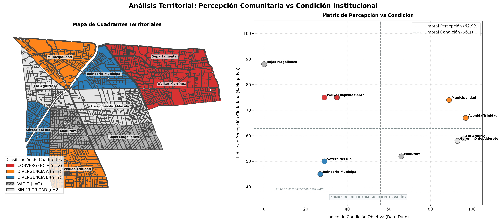

6 Integración de Datos
Small Data comunitario + Big Data institucional
Sesión 6.2 · Día 6 · 1,5 horas · Modalidad Meet · Docente: Denis Berroeta (UAI)
Resumen ejecutivo
Esta sesión cierra el recorrido técnico del Módulo 2. Ya capturaste datos con mapeos y sensores, procesaste opiniones mediante NLP y mediste la capa perceptual del territorio. Ahora toca reunir esas piezas con censos, registros administrativos y cartografía oficial.
El Small Data comunitario es rico, situado y cargado de experiencia vivida, pero parcial: habla de las personas, territorios y momentos que efectivamente participaron. El Big Data institucional es exhaustivo, sistemático y comparable, pero no sabe cómo se vive un problema y puede ser grueso o estar desactualizado (Kitchin 2014). Ninguno representa por sí solo el territorio completo. La evidencia más útil nace de cruzarlos: el dato comunitario dice qué importa y dónde duele; el institucional dice cuánto, para cuántas personas y comparado con qué.
La práctica usa el mismo caso sintético y declarado de La Florida de la sesión 6.1: el tablero de percepción de 1.632 comentarios se cruza con condiciones de infraestructura por los mismos diez barrios. El entregable es una ficha de evidencia territorial de dos páginas: evidencia trazable para la sesión 7.1, no una recomendación de política pública adelantada.
Al finalizar la sesión serás capaz de:
- Distinguir Small Data comunitario y Big Data institucional, con sus fortalezas y puntos ciegos.
- Evaluar la cobertura de un dato comunitario antes de generalizarlo.
- Llevar ambas fuentes a una unidad territorial común y verificar que el cruce no pierde ningún territorio.
- Construir un índice de percepción y un índice de condición con reglas, pesos y umbrales declarados.
- Clasificar territorios como convergencia, divergencia o vacío, siempre evaluando primero la cobertura insuficiente.
- Producir una ficha de evidencia que separe hecho, interpretación, acción de verificación y vacíos de información.
Contenidos de la sesión
- Dos mundos de datos que no se hablan: aportes y límites.
- Representatividad práctica: quién habla, por quién y desde dónde.
- Unidad territorial común, normalización y uniones de tablas seguras.
- Mapa de cuadrantes: convergencia, dos divergencias, sin prioridad y vacío.
- Cuadernillo de cinco prompts para construir la ficha de evidencia.
- Extrapolación honesta, chequeos de control y cierre del Módulo 2.
6.1 Dos mundos de datos que no se hablan
6.1.1 Lo que ya hiciste con ambos
Lo producido en las sesiones previas ya es Small Data: mapeos participativos (4.1–4.2), sensores ciudadanos (5.1), opiniones sistematizadas (5.2) y percepción por tema, lugar y tiempo (6.1). Los censos, registros, capas oficiales y datos de movilidad trabajados en el Módulo 1 son Big Data institucional.
| Criterio | Small Data comunitario | Big Data institucional |
|---|---|---|
| Cobertura | Parcial: voces y lugares que participaron | Amplia y sistemática |
| Actualidad | Cercana al momento vivido | Puede estar rezagada |
| Significado | Alto: experiencia y contexto local | Menor: categorías homogéneas |
| Sesgo | Participación, canal y territorio | Definiciones administrativas y escala |
| Pregunta que responde mejor | ¿Qué importa y dónde duele? | ¿Cuánto, para quiénes y frente a qué comparación? |
Cada fuente aislada puede engañar de una forma distinta. Un diseño puede ser técnicamente impecable y fracasar si ignora cómo se mueve o percibe la gente; una demanda intensa, en cambio, puede corresponder a un sector pequeño y no a la totalidad de la comuna. El caso de Transantiago recuerda el primer riesgo; la experiencia de Google Flu Trends recuerda el segundo: los datos masivos necesitan una lectura situada que los calibre.
El Big Data se parece a un examen de laboratorio: es comparable y preciso en lo que mide, pero no sabe cómo se siente el paciente. El Small Data es la conversación clínica: rica y directa, pero parcial. Un diagnóstico responsable necesita ambas cosas.
6.1.2 Representatividad sin esconderse detrás de una palabra
Antes de generalizar una observación comunitaria, responde tres preguntas:
- ¿Quién participó y quién no: edad, sector, canal o condición de acceso?
- ¿Qué territorios cubre el dato y cuáles quedaron en silencio?
- ¿Qué tan distinta es la población cubierta de aquella que no lo está?
El dato de un taller, una aplicación o una red social puede valer mucho; sólo debe hablar con honestidad por quienes estuvieron allí. Estas tres respuestas forman parte de la ficha final, no son una nota al pie.
6.2 El método del cruce
6.2.1 Una unidad territorial común
Dos fuentes sólo se pueden cruzar cuando comparten una unidad territorial: manzana, zona censal, barrio o grilla. El equipo elige la unidad según la decisión que quiere informar y la disponibilidad de datos; la IA puede traducir escalas —puntos a conteos por zona, comentarios a indicadores por barrio—, pero no decide por el equipo qué escala tiene sentido.
La validación conserva el hábito de todas las sesiones: revisar una muestra, los identificadores y las sumas antes de creer una tabla atractiva.
6.2.2 Kit de La Florida: continuidad con la sesión 6.1
| Componente | Archivo del kit | Contenido |
|---|---|---|
| Small Data | small_data_percepcion_barrio.csv |
n de comentarios, % negativo, índice de percepción, emoción, tema y cobertura. |
| Big Data | big_data_institucional_barrio.csv |
Luminarias, denuncias, delitos, áreas verdes, cámaras y fase del plan. |
| Geometría | barrios_la_florida.geojson |
Diez barrios construidos desde manzanas censales INE, con población y viviendas. |
| Unidad fina | manzanas_la_florida.geojson |
Capa para explorar un cruce de mayor resolución cuando corresponda. |
Cualquier material propio entra al mismo método: cambia la tabla, no la lógica. Si un equipo no dispone de información completa, usar el kit no es un fracaso; permite practicar el flujo completo y reconocer qué faltaría levantar en un caso propio.
6.2.3 El mapa de cuadrantes
El cruce se lee en tres imágenes: percepción por barrio, condición objetiva por barrio y mapa categórico de cuadrantes. Primero se revisa el vacío: una unidad con cobertura insuficiente no se clasifica con un porcentaje inestable, aunque parezca alto.
| Resultado | Condición | Lectura inicial | Siguiente paso |
|---|---|---|---|
| Vacío | Cobertura comunitaria insuficiente | Territorio sin voz suficiente | Ir a terreno y levantar datos. |
| Convergencia | Percepción mala + condición objetiva baja | Ambos mundos coinciden | Prioridad de intervención y verificación operativa. |
| Divergencia A | Percepción mala + condición objetiva alta | Malestar con indicadores relativamente favorables | Investigar, comunicar y activar conversación. |
| Divergencia B | Percepción buena + condición objetiva baja | Problema físico silencioso | Verificar e intervenir antes del conflicto. |
| Sin prioridad | Percepción baja + condición objetiva alta | Sin señal crítica en este cruce | Mantener observación; no equivale a “problema resuelto”. |
El vacío gana siempre. Un 88% negativo sobre 24 comentarios no es una tendencia: es una anécdota con decimales. El vacío es una ausencia de evidencia para leer ese territorio, no una categoría de mal desempeño.
6.2.4 Cuatro barrios, cuatro lecturas
En el caso de La Florida, Walker Martínez combina percepción 75, condición 29 y n=329: es convergencia. Municipalidad combina percepción 74, condición 89 y n=399: divergencia A; el sector que más comenta no es necesariamente el peor servido. Balneario Municipal presenta percepción 45, condición 27 y n=114: divergencia B, un problema físico que aún no se expresa con fuerza.
Rojas Magallanes tiene una condición muy baja, pero sólo 24 comentarios: es vacío. Precisamente por eso se prioriza levantar información allí, no estimar su percepción ni relegarlo por tener pocos reclamos. Buscar sólo donde hay datos es como buscar las llaves bajo el farol: hay luz, pero quizá no están ahí.
6.3 Cuadernillo de prompts para la integración
6.3.1 Antes de copiar un prompt: prepara el contexto
Los cinco prompts no son instrucciones autónomas. La frase “te entrego” significa que, antes de enviarlo, el equipo debe adjuntar los archivos o pegar las tablas reales y reemplazar cada texto entre corchetes. Un modelo no conoce el territorio, los archivos de sesiones anteriores ni las decisiones del equipo si no se le entregan en esa misma conversación.
Usa los prompts en orden (A → B → C → D → E) y conserva los resultados de cada paso para alimentar el siguiente. Al abrir una conversación nueva, vuelve a pegar este bloque mínimo de contexto:
CONTEXTO DEL PROYECTO
- Problema territorial: [pregunta concreta].
- Territorio y período analizado: [comuna/sector] — [fechas].
- Unidad territorial e identificador: [por ejemplo, barrio] — [por ejemplo,
id_barrio].
- Decisiones ya tomadas: umbral de cobertura [n], indicadores y pesos
[lista], y qué significa una condición alta/baja.
- Fuentes adjuntas o pegadas en este mensaje: [nombres exactos de archivos o
tablas].
- Restricción: trabaja sólo con los datos entregados; no inventes unidades,
valores, fuentes ni contexto. Si falta algo, detente y enumera qué falta.Si se usa el kit, los archivos de ese bloque son small_data_percepcion_barrio.csv, big_data_institucional_barrio.csv y, para el mapa, barrios_la_florida.geojson. Si se usan datos propios, se reemplazan por los archivos equivalentes. Nunca basta con enviar sólo el texto del prompt: hay que adjuntar o pegar sus entradas indicadas.
6.3.2 Prompt A — Agregar el Small Data sin borrar silencios
Este paso toma los registros fila a fila de las sesiones anteriores y deja una fila por unidad territorial. Si vienes de la 6.1, el tablero de percepción por barrio ya es el resultado de este prompt.
Usa el CONTEXTO DEL PROYECTO y estas dos entradas adjuntas: (1) la tabla de
datos comunitarios fila por fila —id, fecha, fuente, territorio, tema,
polaridad o medición— y (2) la lista maestra completa de unidades del
territorio con su identificador. Si falta una de las dos, no proceses.
Agrégalos por [UNIDAD TERRITORIAL] y devuelve UNA fila por cada unidad de la
lista maestra, incluidas las que tienen pocos datos o ninguno.
COLUMNAS
unidad | n_registros | n_por_fuente | pct_negativo |
indice_percepcion | emocion_dominante | tema_dominante | cobertura
`indice_percepcion` es el porcentaje de registros negativos, entre 0 y 100.
`cobertura` es `suficiente` si n >= [UMBRAL] e `INSUFICIENTE` en otro caso.
REGLAS
1. Excluye filas vacías o fuera de tema.
2. No omitas, completes con vecinas ni estimes una unidad con pocos registros:
conserva su n real y marca cobertura INSUFICIENTE.
3. Bajo el umbral no calcules porcentaje: deja esa celda vacía.
4. Declara al final total de filas agregadas y filas sin unidad declarada;
ambos deben sumar el total de entrada.El umbral lo elige el equipo y se justifica por el contexto. En el kit de La Florida es n >= 40; en un proyecto pequeño puede ser menor, pero nunca se debe ajustar después de mirar qué barrio queda arriba.
6.3.3 Prompt B — Traer el Big Data: un join que no puede perder barrios
Usa el CONTEXTO DEL PROYECTO y estas dos entradas adjuntas: (1) el resultado
completo del Prompt A y (2) la tabla institucional por [UNIDAD TERRITORIAL]
—población, viviendas y registros pertinentes—. Confirma primero que ambas
tablas usan el identificador [NOMBRE_DEL_IDENTIFICADOR]. Si no lo usan o falta
una tabla, detente y explica la incompatibilidad.
1. Únela con la tabla comunitaria por el identificador de unidad.
2. Convierte valores absolutos en tasas comparables por 1.000 habitantes o
km², según corresponda. Declara la unidad y por qué se eligió.
3. Construye `indice_condicion` entre 0 y 100, donde 100 es la mejor condición
objetiva, con estos pesos definidos por el equipo:
- [INDICADOR 1] 30% (más/mejor o menos/mejor)
- [INDICADOR 2] 25% (más/mejor o menos/mejor)
- [INDICADOR 3] 25% (más/mejor o menos/mejor)
- [INDICADOR 4] 20% (más/mejor o menos/mejor)
Normaliza min–max sobre estas unidades y explica qué significan 0 y 100.
REGLAS
1. El join no puede perder ni duplicar unidades. Declara filas de cada tabla y
filas del resultado.
2. Nombra toda unidad presente en una tabla y ausente en la otra.
3. No inventes valores faltantes: usa `sin_dato`.Los pesos no son un detalle técnico. En La Florida se consideran porcentaje de luminarias operativas, denuncias por mil habitantes, delitos por mil habitantes y m² de área verde por habitante. En otro problema, el equipo debe explicar por qué esos indicadores y esos pesos expresan la condición relevante.
6.3.4 Prompt C — Clasificar cuadrantes con el vacío primero
Usa el CONTEXTO DEL PROYECTO y la tabla unida completa producida en el Prompt
B. No clasifiques si faltan `n_registros`, `cobertura`,
`indice_percepcion` o `indice_condicion`; informa las columnas o unidades que
faltan.
Sobre esa tabla, clasifica cada unidad territorial.
Calcula y declara ANTES de clasificar:
- umbral_percepcion: promedio de `indice_percepcion` con cobertura suficiente;
- umbral_condicion: promedio de `indice_condicion`;
- umbral_lectura: n_registros >= [UMBRAL].
Aplica estas reglas en este orden exacto:
1. cobertura INSUFICIENTE -> VACÍO
2. percepción alta y condición baja -> CONVERGENCIA
3. percepción alta y condición alta -> DIVERGENCIA A
4. percepción baja y condición baja -> DIVERGENCIA B
5. percepción baja y condición alta -> SIN PRIORIDAD
El VACÍO gana siempre. Devuelve:
unidad | n | indice_percepcion | indice_condicion | cuadrante | que_hacer
En `que_hacer`, escribe una sola línea de acción. Al final informa los tres
umbrales y el número de unidades en cada cuadrante.Un cuadrante sin umbrales explícitos no se puede discutir en una reunión. La regla de orden evita que un porcentaje construido sobre pocos registros se disfrace de convergencia y llegue injustificadamente al primer lugar de una lista de prioridades.
6.3.5 Prompt D — Hacer visible el cruce con vibe coding
Usa el CONTEXTO DEL PROYECTO y adjunta: (1) [ARCHIVO].geojson, (2) el CSV o la
tabla completa de cuadrantes producida en el Prompt C y (3) los nombres
exactos de las columnas de unión en cada archivo. No supongas rutas, columnas
ni sistema de coordenadas: si no están disponibles, pídemelos.
Escribe código Python, comentado en español, para generar el mapa de
cuadrantes a partir de esos archivos.
1. Une geometría y tabla por el identificador territorial; antes de dibujar,
imprime cuántas unidades no encontraron par.
2. Dibuja categorías: CONVERGENCIA rojo; DIVERGENCIA A naranjo;
DIVERGENCIA B azul; VACÍO gris con achurado o textura; SIN PRIORIDAD gris
muy claro. Rotula los nombres de las unidades.
3. Incluye leyenda con cada cuadrante y su n de unidades.
4. Al lado, genera un gráfico de dispersión: X = indice_condicion, Y =
indice_percepcion, líneas de ambos umbrales y puntos rotulados.
REGLAS
- El VACÍO debe verse distinto: es ausencia de dato, no un valor bajo.
- No uses escalas continuas; son cinco categorías.
- Explícame qué hará el código antes de ejecutarlo.
El mapa y el gráfico de dispersión son dos formas de revisar la misma lógica: el primero sitúa las decisiones; el segundo permite verificar visualmente los umbrales y las cuatro zonas del cruce.
6.3.6 Prompt E — Redactar la ficha de evidencia territorial
La ficha es el puente hacia el Módulo 3. Su tarea es dejar evidencia legible y auditada; las recomendaciones de política pública se construyen después, con más contexto institucional. En ese módulo el equipo identificará y priorizará casos de uso, dimensionará capacidades y riesgos —incluido el marco NIST de IA responsable— y construirá una hoja de ruta para su institución.
Usa el CONTEXTO DEL PROYECTO y adjunta el resultado completo del Prompt C,
incluidos sus umbrales, además de la lista de fuentes usada en los Prompts A y
B. Añade este contexto de destinatario: la ficha será usada en el Módulo 3
para priorizar casos de uso institucionales, capacidades, riesgos y una hoja
de ruta; aún no se decide una política pública.
Redacta una ficha de evidencia territorial de máximo dos páginas para el
equipo que trabajará el Módulo 3. Si no cuentas con la tabla clasificada, los
umbrales y las fuentes, no redactes una ficha: indica exactamente qué insumo
falta.
ESTRUCTURA OBLIGATORIA
1. PROBLEMÁTICA: pregunta territorial en una frase.
2. DATOS USADOS: dos listas separadas —comunitarios e institucionales— con
fecha, cobertura y responsable de cada fuente.
3. HALLAZGO: HECHO (con n) / INTERPRETACIÓN (hipótesis declarada) / ACCIÓN
(de verificación o gestión).
4. TERRITORIOS PRIORITARIOS: cinco primeros, cuadrante y una línea de por qué.
5. VACÍOS DECLARADOS: territorios y grupos sin dato, y qué falta levantar.
6. PREGUNTA AL MÓDULO 3: la que el equipo llevará a la sesión 7.1.
REGLAS
1. Ninguna afirmación sin n; toda interpretación debe estar marcada como
hipótesis.
2. Los vacíos son resultado, no descargo de responsabilidad.
3. Declara en la misma frase si algo es estimación y no observación.
4. No recomiendes políticas públicas: entrega evidencia para decidir.
5. Lenguaje claro para alguien que no asistió a las sesiones.Explora la ficha, el mapa y la matriz de priorización. Puedes interactuar con los barrios directamente en el mapa o en la matriz.
6.4 Actividad: construir la ficha de evidencia
En salas por familia temática —residuos, verde-hídrico, movilidad o plataformas y datos— cada equipo aplica los cinco prompts sobre su material. Un vocero comunica bloqueos y decisiones al curso. Si no hay material propio completo, se utiliza el kit de La Florida; el objetivo es dominar el método, no simular una completitud inexistente.
- Agrega el Small Data por la unidad territorial elegida.
- Normaliza y une el Big Data sin perder ni duplicar unidades.
- Clasifica cuadrantes con umbrales y cobertura declarados.
- Genera el mapa categórico y el gráfico de dispersión.
- Redacta la ficha de dos páginas y revisa los chequeos antes de entregarla.
El join no pierde unidades; nadie queda huérfano entre las dos tablas; ningún porcentaje se lee bajo el umbral; cada valor distingue observado de estimado; la suma de unidades por cuadrante coincide con el total del territorio. Treinta segundos por chequeo separan una ficha defendible de una ficha sólo bonita.
6.5 Extrapolar sin mentir
Cuando una IA “completa” un territorio sin dato, busca similitudes entre características conocidas: si barrios observados se parecen a otro en ciertas variables, puede proponer una estimación. No ha observado ese barrio; ha producido una hipótesis basada en semejanza.
Dos reglas no tienen excepción:
- Declarar siempre qué es observado y qué es estimado.
- No tomar una decisión irreversible sobre un territorio que sólo cuenta con una estimación.
El modelamiento territorial representativo es una brújula para decidir dónde levantar más información. Una estimación bien declarada orienta; una estimación disfrazada de dato miente.
6.6 Cierre del Módulo 2
El ciclo completo del dato ciudadano queda así:
| Momento | Sesiones | Producto |
|---|---|---|
| Capturar | 4.1–4.2 y 5.1 | Territorio dibujado y medido. |
| Procesar | 5.2 | Opiniones organizadas con trazabilidad. |
| Percibir | 6.1 | Sentimiento por tema, tiempo y territorio. |
| Integrar | 6.2 | Evidencia comparada, priorizada y con vacíos declarados. |
El principio territorial que cierra el módulo es simple: ningún dato representa al territorio completo. La ficha declara sus silencios porque un mapa sin vacío aparente puede estar ocultando precisamente el lugar donde más falta aprender.
Del prompt al mapa; del mapa a la evidencia; de la evidencia a la decisión. El Módulo 3 lleva ese recorrido a la institución de cada equipo.
6.7 Resumen
- Small Data y Big Data son complementarios: uno aporta experiencia situada; el otro, cobertura y comparación. Cada uno por separado tiene puntos ciegos.
- Para integrarlos, ambos deben compartir una unidad territorial y un identificador verificable; un join que pierde barrios invalida el mapa.
- La cobertura insuficiente se evalúa primero: el vacío es hallazgo y orienta el siguiente levantamiento participativo.
- Convergencia y divergencias no son sentencias automáticas: son lentes para verificar, comunicar e investigar con mejor evidencia.
- Los umbrales, pesos, tasas y estimaciones se declaran; la IA calcula y traduce, mientras el equipo conserva las decisiones de sentido.
- La ficha de evidencia territorial cierra el Módulo 2 y es insumo formal de la sesión 7.1.
6.8 Recursos
- Kit La Florida:
small_data_percepcion_barrio.csv,big_data_institucional_barrio.csv,barrios_la_florida.geojsonymanzanas_la_florida.geojson. - Prompt-book de integración: agregación, join seguro, cuadrantes, mapa y ficha de evidencia.
- Plantilla “Ficha de evidencia territorial”: problemática, fuentes, hallazgo, prioridades, vacíos y pregunta para el Módulo 3.
- Checklist del cruce: unidades, huérfanos, umbral, observado/estimado y mapa que cuadra.
- Capa censal y unidades territoriales INE trabajadas desde la sesión 3.2.